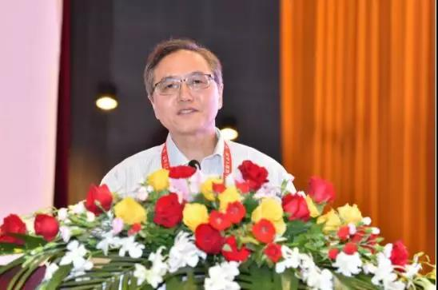
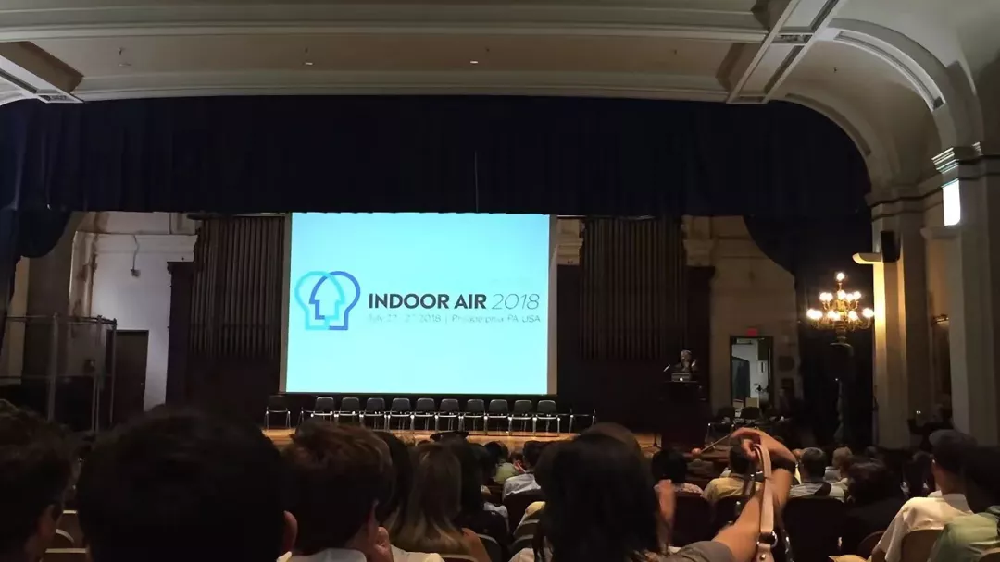
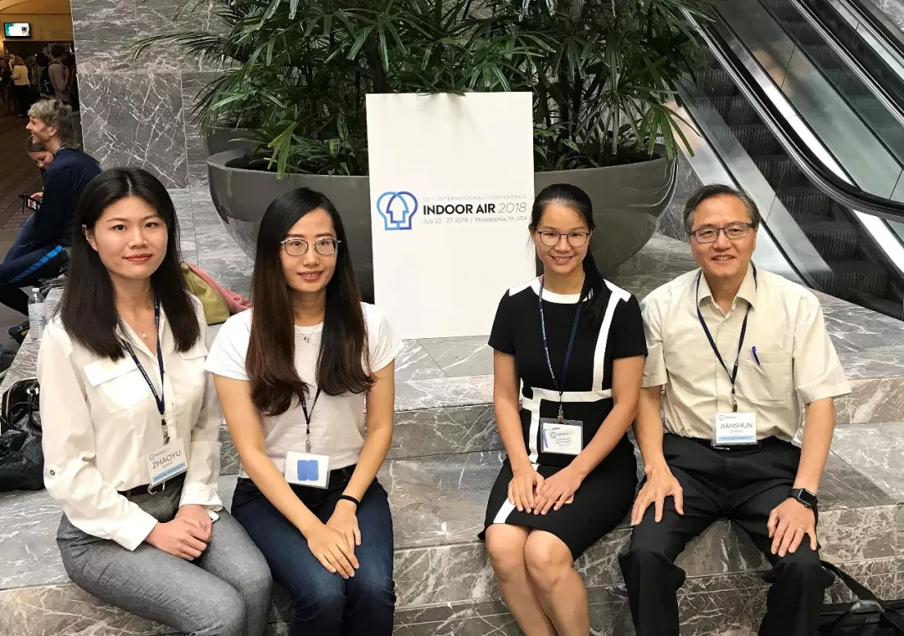

-
学术会议
当前位置：首页 > 学术动态 > 学术会议
-
张建舜教授受邀出席第一届华人能源与人工环境国际学术会议
发布时间：2019年07月22日
-
2019年07月24日，中国环境科学学会室内环境与健康分会青委会论坛暨苏州市洁净产业协会暑期论坛召开，我中心郜志副教授受邀参加。
-
此次会议主要围绕洁净室技术及装备研发展开，主办方为中国环境科学学会室内环境与健康分会，由南京工业大学、苏州市洁净产业协会、
国家空气净化产品及气体检测仪器质量监督检验中心(江苏) 承办。
-

-

-
张建舜教授作大会致辞
-
经过简单的开幕仪式后，会议正式开始。前半部分是洁净技术主题报告，期间由武汉大学的赵福云教授发表洁净室气流组织多态解特性、反演优化设计与高性能计算报告，
同济大学的高乃平教授发表CFD模拟在洁净室和高效过滤单元领域的应用报告，
南京工业大学的周斌副教授发表洁净手术室开门行为对手术室环境的影响报告。
-
郜志副教授发表杀虫剂对室内空气质量及人体健康的影响（待完善）。
-
-
后半部分是洁净装备主题报告，期间由北京航空航天大学的陈龙飞副教授发表宽温纳米颗粒计数仪器研制及应用报告，
南京工业大学的李斐副教授发表建筑环境安全与人员行为识别报告，苏州市计量测试院的厉龙高工发表洁净室用化学过滤器检测研究报告，大连理工大学的吕阳副教授发表集中式空调系统微波灭菌技术研究报告。
之后所有参加人员还一起参观了国家空气净化产品及气体检测仪质量监督检验中心的实验室，在主办方准备的自由时间中，大家一起交流互动，洽谈合作意向，在所有人的配合努力下此次论坛活动圆满结束。
-
中心团队参加第十五届国际室内空气品质与气候会议（Indoor Air）
-
第十五届国际室内空气品质会议于7月22日至7月28日在美国费城召开。
-
Indoor Air是国际室内空气品质与气候学会（the International Society forIndoor Air Quality and Climate, ISIAQ）的官方会议。
-

-
Indoor Air始于1978年，每3年（近三届为2年）举办一次。会议的目的是介绍和交流有关室内空气污染，健康和高效室内环境以及建筑能耗等方面的前沿研究方向和研究思路。该会议是室内空气品质、建筑科学领域世界级顶尖学术会议，每届会议有逾千位来自世界各地不同背景的科学家与会。今年会议由美国德雷塞尔大学承办，会议共有空气净化与渗透，建筑模拟与CFD，舒适与感知，浓度与暴露，源与散发，通风与HVAC系统，微生物与湿度，化学与转化，健康效应与流行病学等九个子课题。
-
我中心助理研究员梁卫辉和施珊珊参加了本次会议并做精彩演讲（待完善）。
-
